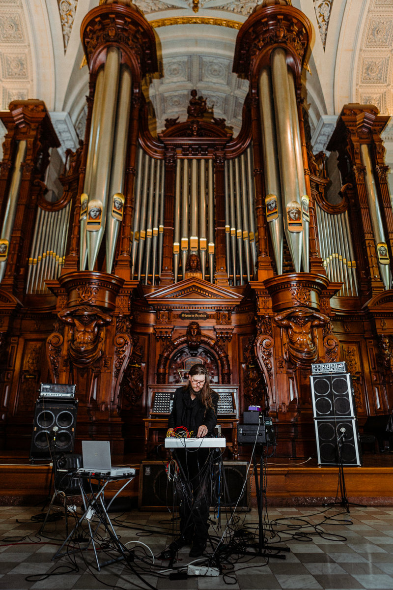

https://retributionbody.bandcamp.com/
M Azevedo (b. 1977) is a Providence, RI based composer, mastering engineer, and acoustician.
Their work as Retribution Body uses custom subwoofers and modular synthesizers to auralize the architecture
of performance spaces though dense fields of standing waves, crafting work that is simultaneously minimalist and overwhelming